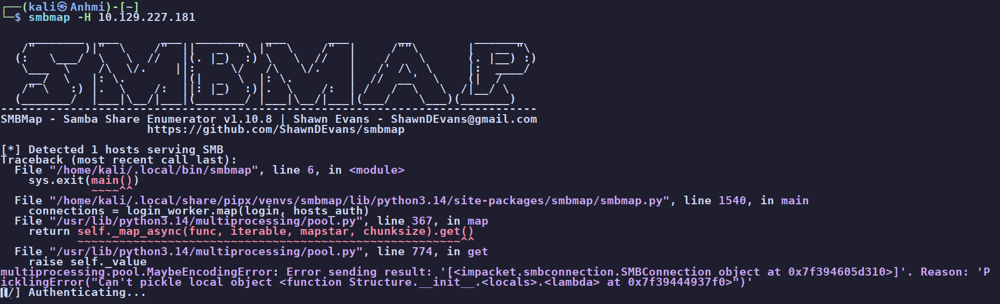
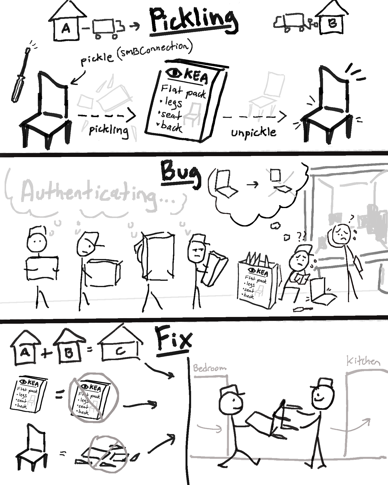
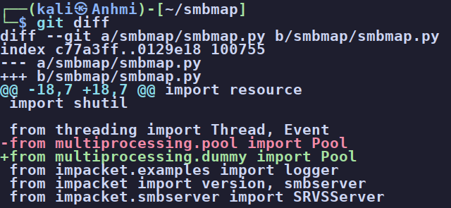
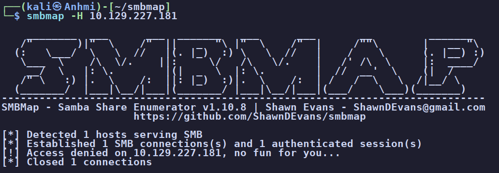
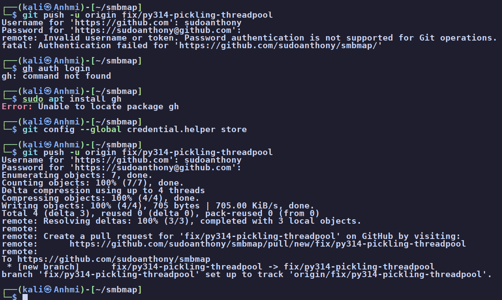

smbmap: thread-based pool fix for Python 3.14
While enumerating a box, smbmap crashed instead of listing shares. On Python 3.14 its process-based pool tries to pickle the worker result, an impacket SMBConnection that carries a local lambda, and lambdas cannot be pickled. The one-line fix is to import Pool from multiprocessing.dummy, a thread-backed pool with the same API that never pickles its results.
01The crash
Running a plain share enumeration against a live host (Legacy to be exact), smbmap detected SMB and then died during the login phase:
$ smbmap -H 10.129.227.181
[*] Detected 1 hosts serving SMB
...
multiprocessing.pool.MaybeEncodingError: Error sending result:
'[<impacket.smbconnection.SMBConnection object ...>]'. Reason:
'PicklingError("Can't pickle local object
<function Structure.__init__.<locals>.<lambda> ...>")'
MaybeEncodingError. The cause is a PicklingError on Structure.__init__.<locals>.<lambda> inside the impacket SMBConnection.After the error the worker processes were left spinning, so the run appeared to "authenticate forever" until I killed it, which then dumped a dozen more tracebacks and a leaked-semaphore warning. All of that is downstream of one root cause.
How I found it
I was in the middle of enumerating Legacy, reaching for smbmap the way I always do for a quick look at a
host's shares. Instead of the usual output it printed its banner, said it detected SMB, and then just sat on
Authenticating... forever. My first instinct was that the box was slow or the null session was
hanging, so I waited. Nothing. When I finally hit Ctrl+C to kill it, the terminal threw up a
wall of tracebacks, a dozen worker processes dying at once, and a leaked-semaphore warning at the bottom. I
tried a lot of my other SMB enumeration tools and they seemed to work fine, and I did not remember this one
ever doing this before.
I assumed I had messed up an install or it was out of date. I reinstalled smbmap and ran the command again, but it still failed. Only when I looked at the smbmap GitHub itself did I see other people had two similar issues, one from almost a year ago and one from a month ago.
Looking at what the program throws up when I Ctrl+C out of the stalling "Authenticating..."
step, I saw multiprocessing.pool.MaybeEncodingError, and its reason, a PicklingError
that "can't pickle local object ... <lambda>" inside an impacket SMBConnection.
So while I do not have an intricate understanding of smbmap's internals, two details told me this was not
my setup. First, the error named the exact object and the exact reason, it was not a vague network timeout.
Second, it happened on every host I pointed it at, not just Legacy. From there it was just reading
the traceback down to the line it blamed (smbmap.py line 1540, the pool's .map
call), opening the file, and finding the process pool trying to ship a connection object back across a
process boundary. That is the bug.
I double-checked my reasoning with Claude (Opus 4.8), and it confirmed what I thought was going on.
What is Pickle / Pickling?
If you are newer to Python this part of the error can look like gibberish (just as it did to me). So I will let Claude explain it, the way it did for me when I asked:
Why does smbmap care? Because Python's
multiprocessing hands work out to separate processes,
and separate processes do not share memory. To send a result from a worker process back to the main one,
Python has to pickle it, box up the bytes, ship them across, and unpickle on the other side.The catch is that not everything can be flat-packed. To rebuild an object later, Python needs a stable, importable name for each of its parts. A lambda (an anonymous, throwaway function) has no such name, so Python cannot write down instructions to rebuild it. The impacket
SMBConnection that smbmap tries to send back happens to carry one of these nameless lambdas
inside it, so when Python reaches for the packing tape it fails. That is the PicklingError.

SMBConnection) to move it between houses (processes). The bug: one part will not come apart (the lambda), so the move jams and the workers pile up on "Authenticating...". The fix: merge the two houses into one (threads), so you just carry the chair over whole, no packing, no truck. Hand-drawn by me in Procreate. No AI.02Root cause
smbmap spreads its host connections across worker processes with a
multiprocessing.pool.Pool. When a worker finishes, the pool has to send its result back to the
parent process, and crossing that process boundary means pickling the object.
The object being returned is an impacket SMBConnection, which holds a local
lambda (Structure.__init__.<locals>.<lambda>). Local lambdas have no
importable name, so they cannot be pickled.
Why is the bug happening now?
This was latent for years. Python 3.14 changed the default multiprocessing start method and made the pickle path stricter, so a bug that older Python quietly tolerated became a hard crash. The same change is breaking the same way across the wider Python ecosystem, not just in smbmap.
03The fix
We do not cross a process boundary at all. multiprocessing.dummy exposes the exact same
Pool API backed by threads. Threads share memory, so results are passed by
reference and never pickled. One import changes it for every pool in the file:
# smbmap/smbmap.py, line 21
- from multiprocessing.pool import Pool
+ from multiprocessing.dummy import Pool
git diff shows the import on line 21 swapped from multiprocessing.pool to multiprocessing.dummy.Picking the fix (from Claude)
Anthony asked me how I landed on this one line out of everything you could change, so here is the
reasoning. The crash can be fixed in a few places, and most of them are the wrong place. You could patch
impacket so its SMBConnection no longer carries a lambda, but that is someone else's library and
a much larger change. You could rewrite smbmap's worker to return only simple, picklable data instead of the
whole connection object, but that is a real refactor with room to add new bugs. You could force Python's old
fork start method, but that is Linux-only and fork is being retired.
The trick is to fix the root condition, not the symptom. The error only happens because results cross a
process boundary and have to be pickled, so remove the boundary and the whole class of problem disappears.
multiprocessing.dummy gives the identical Pool API backed by threads, which share
memory and never pickle, so one changed import on line 21 fixes every pool in the file at once with no logic
touched. It is also the easiest change for a maintainer to trust: one line, no behavior change, nothing to
review but the import. The work is network I/O bound, so threads lose nothing to the GIL, no real downside.
04Proof
Same command, same host, same version (1.10.8), only the import changed. Before, it crashed with the pickling error. After, it authenticates, enumerates, and exits cleanly:
$ smbmap -H 10.129.227.181
[*] Detected 1 hosts serving SMB
[*] Established 1 SMB connections(s) and 1 authenticated session(s)
[!] Access denied on 10.129.227.181, no fun for you...
[*] Closed 1 connections
"Access denied" is the host refusing anonymous listing, which is the tool working correctly. No traceback, no hanging workers, no leaked-semaphore warning.
05The pull request
I confirmed two existing issues (#120 and #123) were the same bug. #123 even had a report that the fix "did not work", but the traceback there showed the user was still running an unpatched copy of the file, a stale-install problem rather than a flaw in the fix. I opened PR #124 with the one-line change, a root-cause writeup, and before/after proof, closing both issues.

06Takeaways
- Read the traceback to the bottom. "Can't pickle local object" names the exact object and the exact reason; the fix is in the message.
- A crash that appears on every target, not just one, is an environment problem, not a target problem.
- When you report or fix a bug, confirm the running copy is the one you edited. A stale install looks identical to a broken fix.